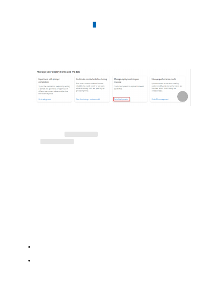
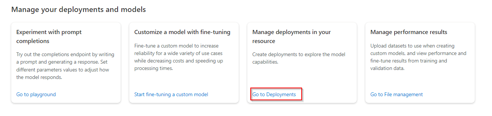

To deploy a model, follow these steps:
1. Sign in to Azure OpenAI Studio .
2. Select the subscription and OpenAI resource to work with.
3. Select Manage deployments in your resource > Go to Deployments under
Manage your deployments and models. You might first need to scroll down on
the landing page.
4. Select Create new deployment from the Management > Deployments page.
5. Select a model from the drop-down. For getting started in the East US region, we
recommend the text-davinci-003 model. In other regions you should start with
the text-davinci-002 model. Some models are not available in all regions. For a
list of available models per region, see Model Summary table and region
6. Enter a model name to help you identify the model. Choose a name carefully. The
model name will be used as the deployment name via OpenAI client libraries and
API.
7. Select Create to deploy the model.
The deployments table displays a new entry that corresponds to this newly created
model. Your deployment status will move to succeeded when the deployment is
complete and ready for use.
Now that you have a resource and your first model deployed get started making
API calls and generating text with our quickstarts.
Learn more about the underlying models that power Azure OpenAI.
Next steps
{kind=link}